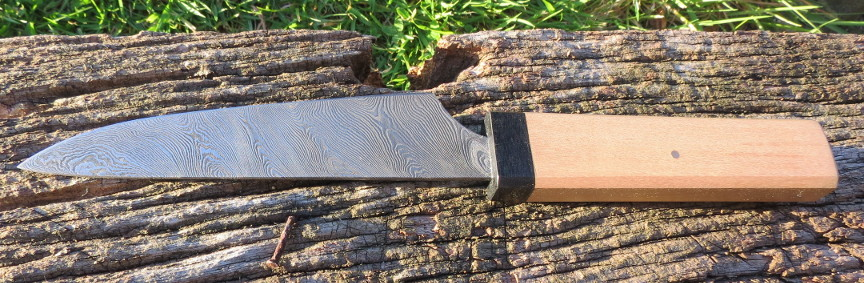
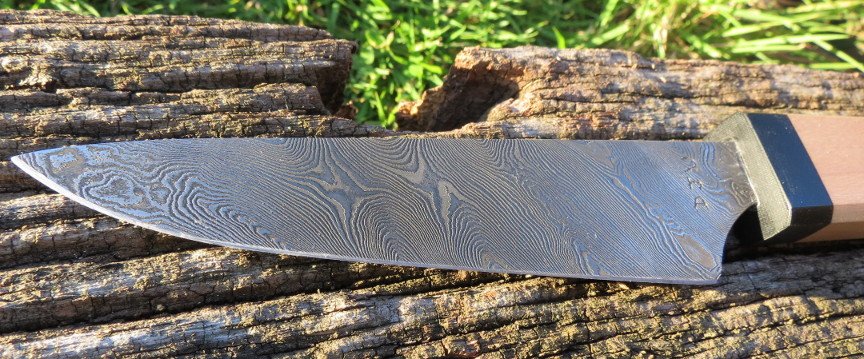
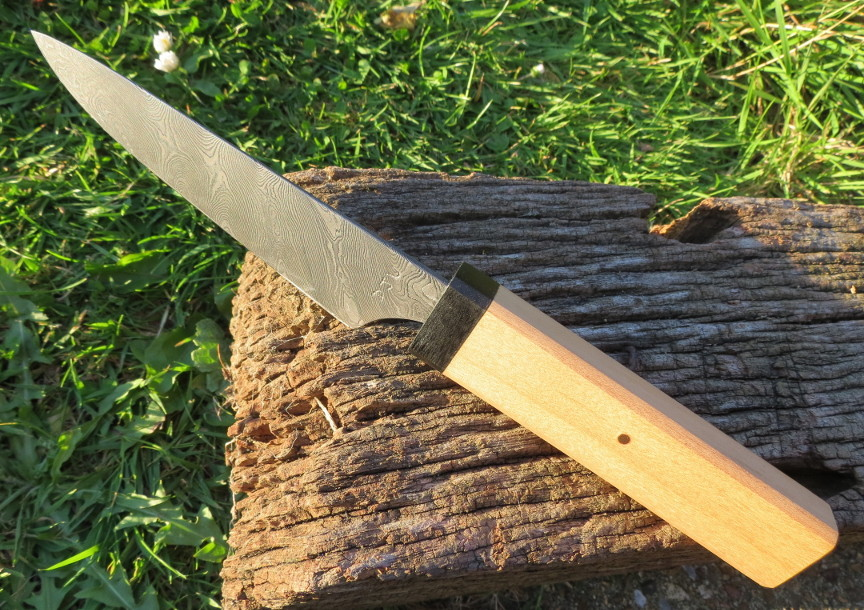

a pattern welded small kitchen knife
July 2016
I made this knife for my colleague Nick Ferlias as a wedding present. The blade is 72 layers of 15n20 and CS70, with quite a heavy etch, I designed it as a small kitchen knife and I hope it is serving Nick well. The handle is maple with a black micarta bolster and leather spacer.
 